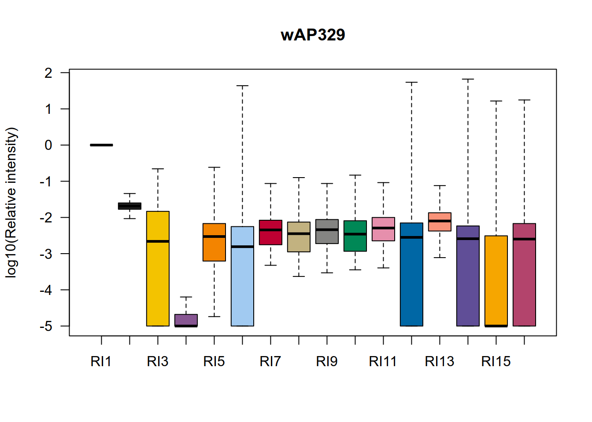
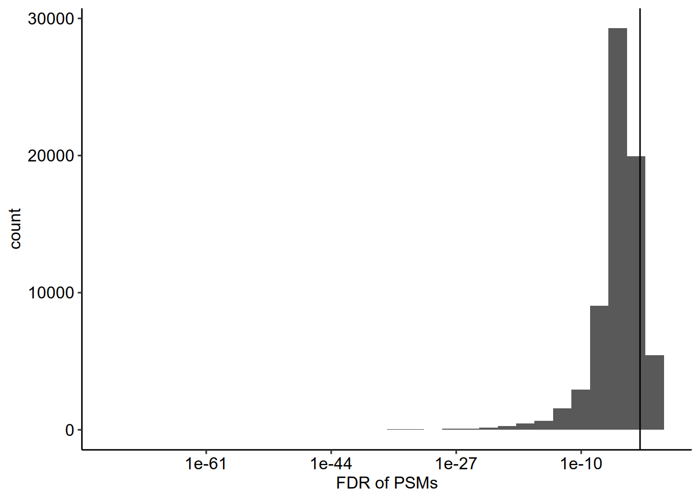
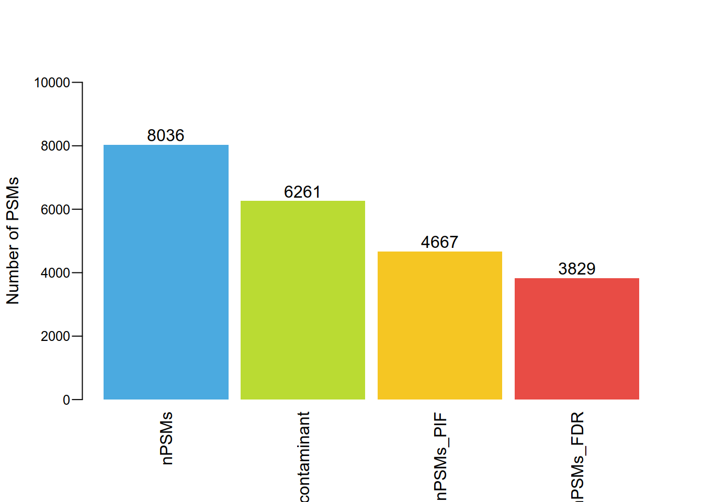
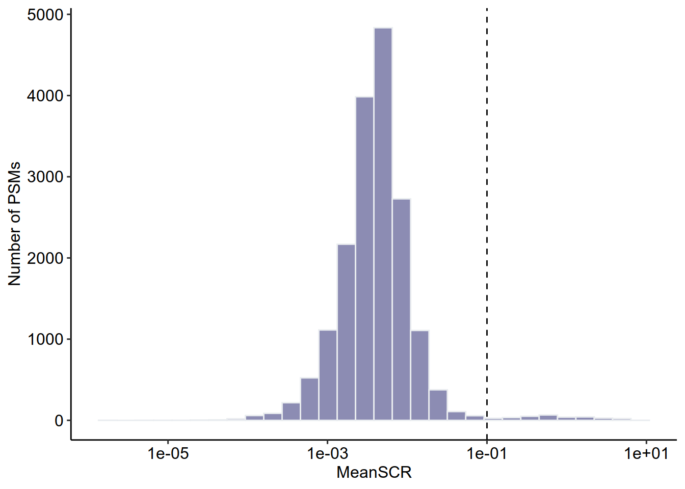
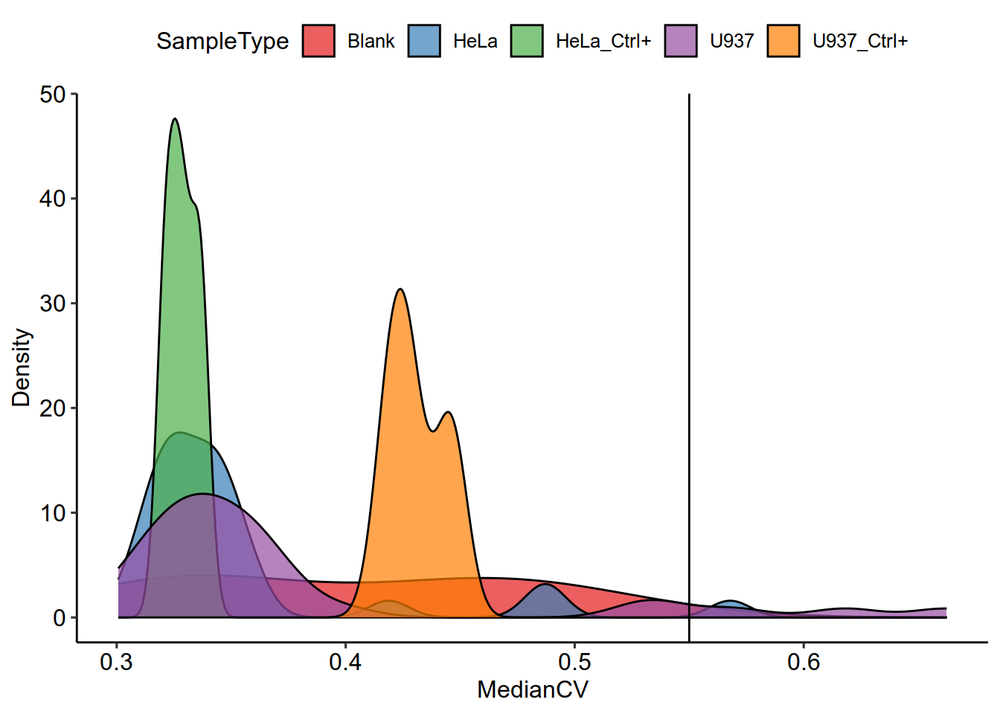
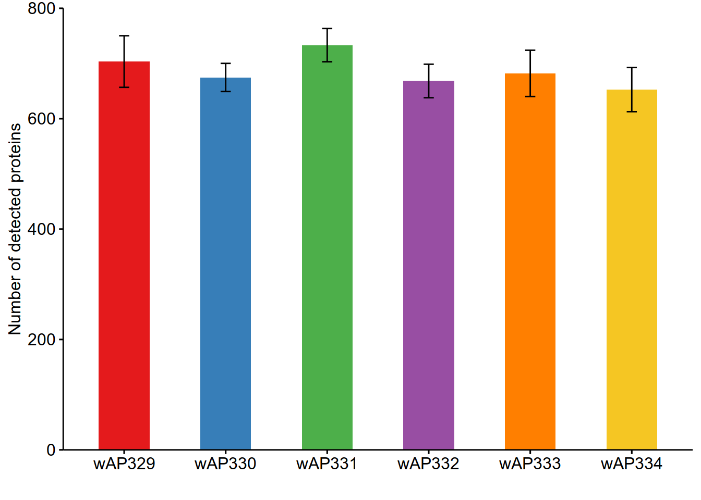
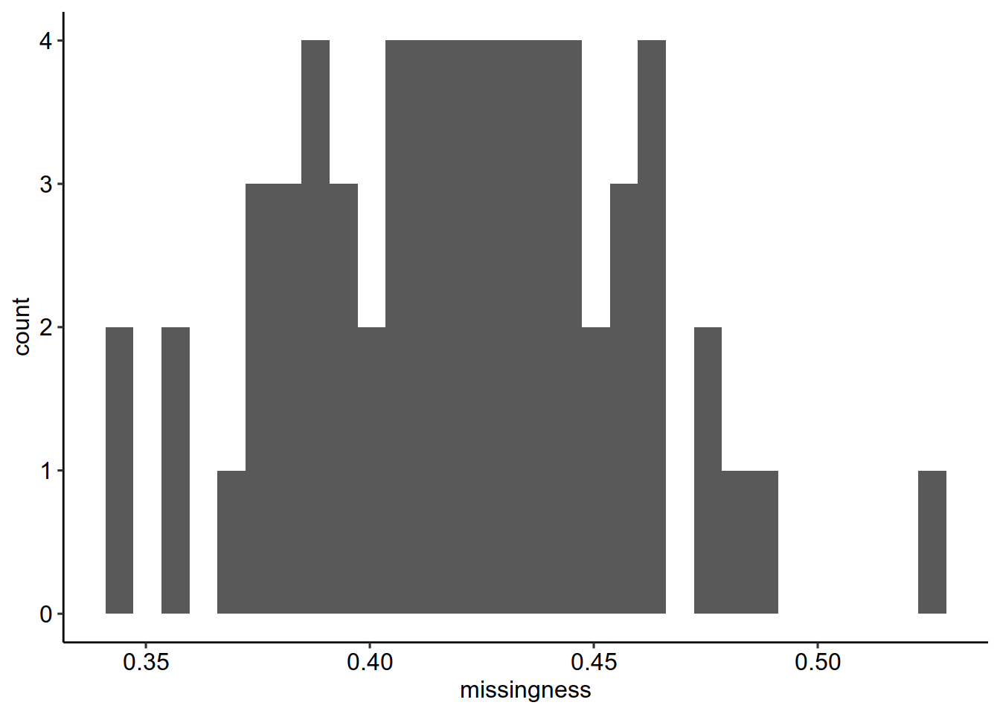
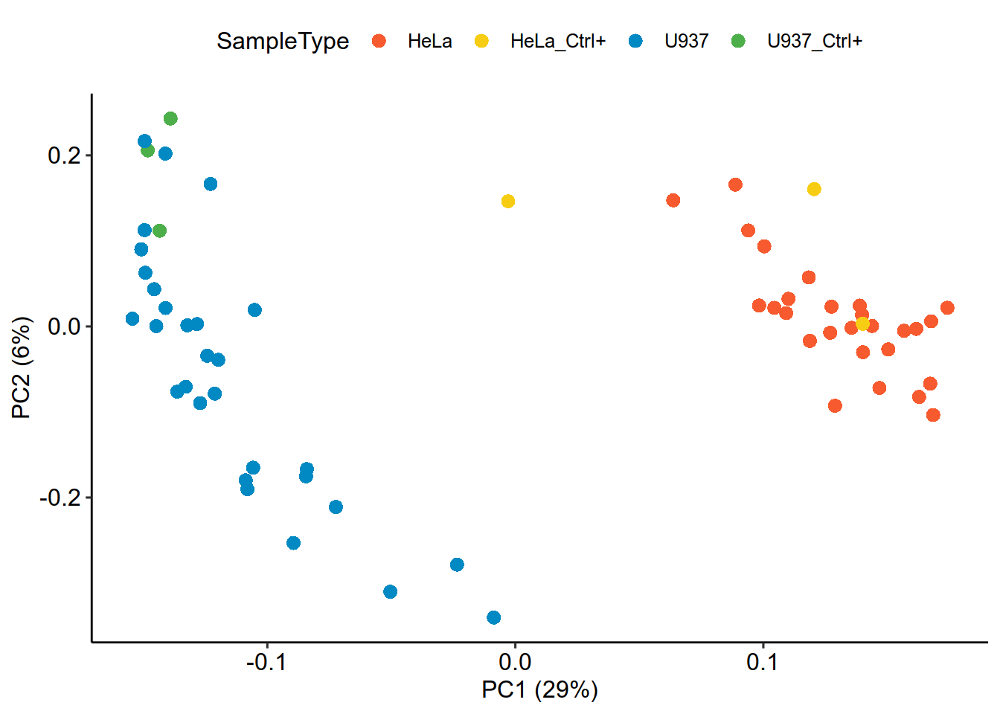

2 SCP Analysis with SCoPE2 Data
############# 1. 读取maxquant处理后经DART-ID校正后的PSM矩阵
data <- read.table("../MaxQuant_results/ev_updated.txt", header = T,
stringsAsFactors = F, sep = "\t")
t = colnames(data)
RI = paste0('RI',seq(1,16))
t[grep('Reporter.intensity.corrected',colnames(data))] = RI
colnames(data) = t
############# 2. 加载所需R包
suppressMessages(library(scp))
suppressMessages(library(tidyverse))
suppressMessages(library(ggpubr))
suppressMessages(library(RColorBrewer))
suppressMessages(library(impute))
suppressMessages(library(sva))
suppressMessages(library(scater))
suppressMessages(library(SCP.replication))
############# 3. 注释16个chanel对应细胞类型
SampleAnnotation = readRDS('data/sampleannotation.rds')
############# 4. 构建scp project
scp <- readSCP(featureData = data,
colData = SampleAnnotation,
channelCol = "Channel",
batchCol = "Raw.file",
removeEmptyCols = TRUE)## Loading data as a 'SingleCellExperiment' object## Splitting data based on 'Raw.file'## Formatting sample metadata (colData)## Formatting data as a 'QFeatures' object############# 5. 比较不同通道信号强度
colors = c(
"#e25822" ,"#222222", "#f3c300", "#875692" ,"#f38400", "#a1caf1" ,"#be0032", "#c2b280" ,"#848482", "#008856" ,
"#e68fac", "#0067a5" ,"#f99379" ,"#604e97" ,"#f6a600" ,"#b3446c" ,"#dcd300" ,"#882d17" ,"#8db600" ,
"#654522" ,"Red2","#2b3d26"
)
t = scp[,,2]## Warning: 'experiments' dropped; see 'metadata'## harmonizing input:
## removing 224 sampleMap rows not in names(experiments)
## removing 224 colData rownames not in sampleMap 'primary'raw_file = names(t)
t = assay(t)
colnames(t) = paste0('RI',1:16)
boxplot(log10(t/t[,1]+0.00001),las=1,ylab='log10(Relative intensity)',
col = colors,outline = F,main = raw_file)
############# 6. PSM过滤
nPSMs = dims(scp)[1,]
# contaminant
scp <- filterFeatures(scp,
~ Reverse != "+"&
Potential.contaminant != "+" )## 'Reverse' found in 15 out of 15 assay(s)
## 'Potential.contaminant' found in 15 out of 15 assay(s)nPSMs_contaminant = dims(scp)[1,]
# PIF
scp <- filterFeatures(scp,
~!is.na(PIF)& PIF > 0.8)## 'PIF' found in 15 out of 15 assay(s)nPSMs_PIF = dims(scp)[1,]
# FDR
scp <- pep2qvalue(scp,
i = names(scp),
PEP = "dart_PEP",
rowDataName = "qvalue_psm")
scp <- pep2qvalue(scp,
i = names(scp),
PEP = "dart_PEP",
groupBy = "Leading.razor.protein",
rowDataName = "qvalue_protein")
rbindRowData(scp, names(scp)) %>%
data.frame %>%
ggplot(aes(x = qvalue_psm)) +
geom_histogram() +
geom_vline(xintercept = c(0.01),
lty = c(1)) +
scale_x_log10()+theme_pubr()+xlab("FDR of PSMs")## `stat_bin()` using `bins = 30`. Pick better value with `binwidth`.
scp <- filterFeatures(scp,
~ !grepl("REV|CON", Leading.razor.protein))## 'Leading.razor.protein' found in 15 out of 15 assay(s)scp <- filterFeatures(scp,
~ qvalue_psm < 0.01 & qvalue_protein < 0.01)## 'qvalue_psm' found in 15 out of 15 assay(s)
## 'qvalue_protein' found in 15 out of 15 assay(s)nPSMs_FDR = dims(scp)[1,]
#三步过滤PSM保留数目
df = data.frame(nPSMs = nPSMs,nPSMs_contaminant = nPSMs_contaminant,
nPSMs_PIF = nPSMs_PIF,nPSMs_FDR = nPSMs_FDR)
t = apply(df,2,mean)
p = barplot(round(t),
col = c("#4BAAE0","#badb33", "#f5c623", "#e84c45"),
beside = TRUE,
las = 2, border = NA,width = 0.4,
ylab = 'Number of PSMs',cex.axis = 0.8,
ylim = c(0,10000),mgp = c(3,0.6,0),space = c(0.1,0.1,0.1,0.1))
text(p, round(t)+300 , as.vector(round(t)),cex=1) 
######## 7. MeanSCR 单细胞样本信号应该远低于carrier信号
keepAssay <- dims(scp)[1, ] > 700
table(keepAssay)## keepAssay
## TRUE
## 15scp <- scp[, , keepAssay]
scp_bulk = scp[,,8:15]## Warning: 'experiments' dropped; see 'metadata'## harmonizing input:
## removing 112 sampleMap rows not in names(experiments)
## removing 112 colData rownames not in sampleMap 'primary'scp1 <- computeSCR(scp[,,2:7],
i = names(scp[,,2:7]),
colvar = "SampleType",
carrierPattern = "Carrier",
samplePattern = "HeLa|U937|U937_Ctrl+|HeLa_Ctrl+",
sampleFUN = "mean",
rowDataName = "MeanSCR")## Warning: 'experiments' dropped; see 'metadata'## harmonizing input:
## removing 144 sampleMap rows not in names(experiments)
## removing 144 colData rownames not in sampleMap 'primary'## Warning: 'experiments' dropped; see 'metadata'## harmonizing input:
## removing 144 sampleMap rows not in names(experiments)
## removing 144 colData rownames not in sampleMap 'primary'scp = scp1
rbindRowData(scp, i = names(scp)) %>%
data.frame %>%
ggplot(aes(x = MeanSCR)) +
geom_histogram(color="#e9ecef",fill = '#404080', alpha=0.6) +
geom_vline(xintercept = c( 0.1),
lty = c( 2)) +
ylab('Number of PSMs')+
scale_x_log10()+theme_pubr()## Warning: Transformation introduced infinite values in continuous x-axis## `stat_bin()` using `bins = 30`. Pick better value with `binwidth`.## Warning: Removed 322 rows containing non-finite values (`stat_bin()`).
#MeanSCR<0.1 筛选PSM
scp <- filterFeatures(scp,
~ !is.na(MeanSCR) &
!is.infinite(MeanSCR) &
MeanSCR < 0.1)## 'MeanSCR' found in 6 out of 6 assay(s)################ 8. 合并生成peptide x cell 矩阵
#PSM 数据标准化
scp <- divideByReference(scp,
i = names(scp),
colvar = "SampleType",
samplePattern = ".",
refPattern = "Reference")
#合并PSM为peptide
remove.duplicates <- function(x){
apply(x, 2, function(xx) xx[which(!is.na(xx))[1]] )}
peptideAssays <- paste0("peptides_", names(scp))
scp <- aggregateFeaturesOverAssays(scp,
i = names(scp),
fcol = "Modified.sequence",
name = paste0("peptides_", names(scp)),
fun = remove.duplicates)##
Aggregated: 1/6##
Aggregated: 2/6##
Aggregated: 3/6##
Aggregated: 4/6##
Aggregated: 5/6##
Aggregated: 6/6scp <- infIsNA(scp, i = peptideAssays)
scp <- zeroIsNA(scp, i = peptideAssays)
scp <- joinAssays(scp,
i = peptideAssays,
name = "peptides")
################ 9. 过滤低质量单细胞
#计算medianCV,来自同一蛋白质的肽段表达水平variation
scp <- medianCVperCell(scp,
i = peptideAssays,
groupBy = "Leading.razor.protein",
nobs = 3,
norm = "SCoPE2",
na.rm = TRUE,
colDataName = "MedianCV")
colData(scp) %>%
data.frame %>%
filter(SampleType %in% c("HeLa","U937","Blank","U937_Ctrl+","HeLa_Ctrl+")) %>%
ggplot(aes(x = MedianCV,
fill = SampleType)) +
geom_density(alpha = 0.7) +
geom_vline(xintercept = 0.55)+theme_pubr()+
scale_fill_manual(values = brewer.pal(9,'Set1'))+ylab('Density')
colData(scp) %>%
data.frame %>%
rownames_to_column("cells") %>%
filter(MedianCV < 0.55,
SampleType %in% c( "HeLa","U937","U937_Ctrl+","HeLa_Ctrl+")) %>%
pull(cells) ->
keep
length(keep)## [1] 62scp1 <- scp[, rownames(colData(scp))%in%keep, ]
scp = scp1
################ 10. 合并生成protein x cell 矩阵
#peptide数据标准化
scp <- sweep(scp,
i = "peptides",
MARGIN = 2,
FUN = "/",
STATS = colMedians(assay(scp[["peptides"]]), na.rm = TRUE),
name = "peptides_norm1")
scp <- sweep(scp,
i = "peptides_norm1", MARGIN = 1,
FUN = "/",
STATS = rowMeans(assay(scp[["peptides_norm1"]]),
na.rm = TRUE),
name = "peptides_norm2")
scp <- filterNA(scp,
i = "peptides_norm2",
pNA = 0.95)
scp <- logTransform(scp,
base = 2,
i = "peptides_norm2",
name = "peptides_log")
#合并peptide为protein
scp <- aggregateFeatures(scp,
i = "peptides_log",
name = "proteins",
fcol = "Leading.razor.protein",
fun = matrixStats::colMedians, na.rm = TRUE)## Your quantitative and row data contain missing values. Please read the
## relevant section(s) in the aggregateFeatures manual page regarding the
## effects of missing values on data aggregation.####统计单细胞中的蛋白种类
sc_protein = assay(scp[['proteins']])
index = c()
for( i in 1:dim(sc_protein)[2]){
index = c(index,table(is.na(sc_protein[,i]))[1])
}
sc_protein = data.frame(id = colnames(sc_protein),detected_num = index)
mean(sc_protein$detected_num)## [1] 686.9355t = separate(data = sc_protein, col = id, into = c("Raw_file", "t"), sep = "RI")
df = data.frame(Protein_num = t$detected_num,
group = t$Raw_file)
label = df %>%group_by(group)%>%summarise_at(vars(Protein_num), list(name = median))
df = merge(df,label,by='group')
ggbarplot(
df, x = "group", y = "Protein_num",
fill = 'group',add = c("mean_sd"),
color = NA,
palette = c("#E41A1C" ,"#377EB8" ,"#4DAF4A" ,
"#984EA3", "#FF7F00" ,"#f5c623"),width = 0.5,
add.params = list(color = "black",size = 0.5),
)+xlab('')+theme(legend.position = "none")+
ylab('Number of detected proteins')+
scale_y_continuous(expand=c(0,0),limits=c(0,800))
################ 11. protein矩阵处理
#标准化
scp <- sweep(scp, i = "proteins",
MARGIN = 2,
FUN = "-",
STATS = colMedians(assay(scp[["proteins"]]),
na.rm = TRUE),
name = "proteins_norm1")
scp <- sweep(scp,
i = "proteins_norm1",
MARGIN = 1,
FUN = "-",
STATS = rowMeans(assay(scp[["proteins_norm1"]]),
na.rm = TRUE),
name = "proteins_norm2")
#imputation 去除NA值
longFormat(scp[, , "proteins"]) %>%
data.frame %>%
group_by(colname) %>%
summarize(missingness = mean(is.na(value))) %>%
ggplot(aes(x = missingness)) +
geom_histogram()+theme_pubr()## Warning: 'experiments' dropped; see 'metadata'## harmonizing input:
## removing 496 sampleMap rows not in names(experiments)## `stat_bin()` using `bins = 30`. Pick better value with `binwidth`.
scp <- impute(scp,
i = "proteins_norm2",
name = "proteins_imptd",
method = "knn",
k = 3, rowmax = 1, colmax= 1,
maxp = Inf, rng.seed = 1234)
#去除批次效应
sce <- getWithColData(scp, "proteins_imptd")## Warning: 'experiments' dropped; see 'metadata'batch <- colData(sce)$Raw.file
model <- model.matrix(~ SampleType, data = colData(sce))
assay(sce) <- ComBat(dat = assay(sce),
batch = batch,
mod = model)## Found6batches
## Adjusting for3covariate(s) or covariate level(s)
## Standardizing Data across genes
## Fitting L/S model and finding priors
## Finding parametric adjustments
## Adjusting the Datascp %>%
addAssay(y = sce,
name = "proteins_batchC") %>%
addAssayLinkOneToOne(from = "proteins_imptd",
to = "proteins_batchC") ->
scp
#校正蛋白表达矩阵
scp <- sweep(scp, i = "proteins_batchC",
MARGIN = 2,
FUN = "-",
STATS = colMedians(assay(scp[["proteins_batchC"]]),
na.rm = TRUE),
name = "proteins_batchC_norm1")
scp <- sweep(scp,
i = "proteins_batchC_norm1",
MARGIN = 1,
FUN = "-",
STATS = rowMeans(assay(scp[["proteins_batchC_norm1"]]),
na.rm = TRUE),
name = "proteins_scp")
################ 12. 细胞聚类与可视化
#Dimension reduction
proteins_scp = scp[['proteins_scp']]
protein = assay(scp[['proteins_scp']])
pcaRes <- pcaSCoPE2(proteins_scp)
pcaPercentVar <- round(pcaRes$values[1:2] / sum(pcaRes$values) * 100)
## Plot PCA
df = SampleAnnotation
df$id = paste0(df$Raw.file,df$Channel)
row.names(df) = df$id
df = df[df$id%in%colnames(protein),]
df = data.frame(PC = pcaRes$vectors[, 1:2],
colData(proteins_scp))
df%>%
ggplot() +
aes(x = PC.1,
y = PC.2,col = SampleType) +
geom_point(alpha = 1,shape = 16,size = 3) +
xlab(paste0("PC1 (", pcaPercentVar[1], "%)")) +
ylab(paste0("PC2 (", pcaPercentVar[2], "%)")) +
scale_colour_manual(values=c("U937"="#0089C2","HeLa"="#F75A2E",
"U937_Ctrl+" = "#4DAF4A","HeLa_Ctrl+" = "#f7cd13"
))+theme_pubr()